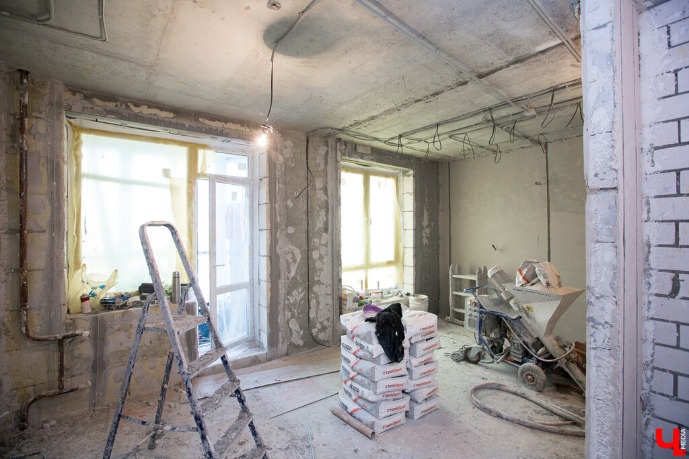
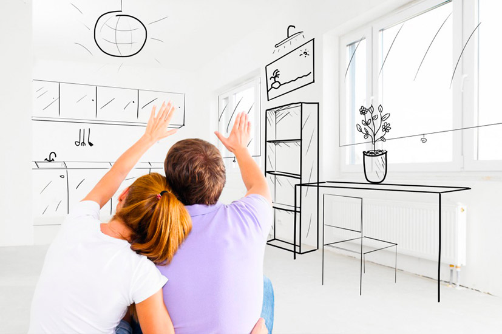
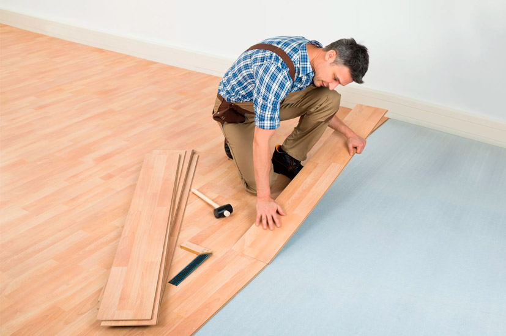
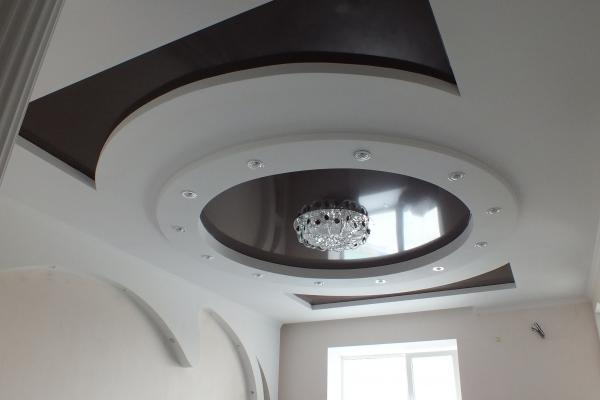
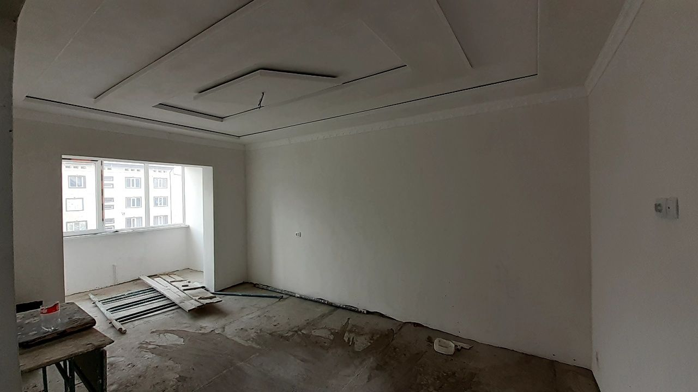

Ремонт в новостройке: топ-10 советов
Известно, что хорошая отделка в квартире иногда может вылиться в кругленькую сумму, сильно увеличивающую предполагаемую стоимость нового жилья. Покупатели квартир в жилых комплексах эконом-класса по этой причине часто берут квартиры в уже готовом виде, сразу с чистовой отделкой. Ну а покупатели квартир в премиум-сегменте недвижимости не обращают на это внимания (ну или хотя бы умело делают вид). В результате, бремя ремонта всегда ложится на людей, которые вроде бы и не готовы тратить на него много денег, но в то же время хотят, чтобы квартира в действительности соответствовала их мечтам.
Как же сделать ремонт в новостройке качественно и недорого? “Новостроев” даёт десять полезных советов.
Содержание
Будьте внимательны при приёме квартиры
Считайте, что длинный процесс ремонта начинается с того момента, когда вы делаете самый первый шаг в свою новую квартиру – даже если она тогда больше похожа на пустую коробку. Начаться ремонт, впрочем, должен не с того, что вы сразу схватите молоток и будете прибивать к стенам полки. Вам сперва нужно внимательно осмотреться вокруг и разобраться, в каком виде вы получаете своё будущее жильё.
- Стены, понятно, голые – но ровные ли?
- Сантехника, допустим, установлена – но правильно ли, и та ли, что была обещана изначально?
- Площадь, конечно, хотелось бы побольше – а вообще, правильно ли вам её посчитали?
Проверьте всё, что есть (это, как мы уже выяснили, не так много), и со всеми недочётами обратитесь к застройщику, чтобы он самостоятельно их исправил. Чем раньше вы это сделаете, тем выше вероятность, что застройщик не будет отказываться от своих обещаний.
Ознакомьтесь с правилами и особенностями дома
Когда застройщик уже выполнил все обязательства по квартире, и бремя ремонта полностью легло на вас, разберитесь с его условиями. Какие-то явно будет диктовать дом сам по себе.
Известно, например, что кирпичные здания усаживаются дольше остальных, что затягивает в них ремонтный процесс – вернее, откладывает его на неопределённый срок. В панельных домах ремонт наоборот пройдёт быстрее, хотя бы потому, что в большинстве из них вы просто не сможете провести перепланировку. Это значит, что все возможные изменения там будут не серьёзными, а скорее косметическими.
Кроме конструкции дома, какие-то правила ремонта могут выставить и его жители. Заранее узнайте, есть ли ограничения по времени проведения работ, согласуйте с охраной или консьержем доступ ваших рабочих на объект и сразу уточните, есть ли штрафы за непреднамеренную порчу мест общего пользования. Последнее будет полезно не только если вы случайно поцарапаете лифт, перевозя в нём материалы для отделки, но и если поцарапаете лифт просто так, вдруг у вас переходный возраст.
Сделайте грамотный и подробный план всего процесса
Итак, квартира к ремонту готова, а его возможные рамки очерчены – получается, пора приступать. И снова не спешите хвататься за молоток или раскатывать рулон обоев, вместо этого возьмите чистый лист бумаги и карандаш и составьте пошаговый список дел. Сначала можете набросать несколько пунктов из головы, потом поищите в интернете, как ремонт делается на самом деле, и добавьте к списку находки оттуда.
Определите порядок – например, прежде, чем начинать какую-то работу, стоит закупить все нужные для её проведения материалы, а мебель лучше покупать уже после того, как будет готов пол. В конце концов, вам нужно в деталях представить не только процесс ремонта, но и желанный конечный результат. Для последнего можно обратиться к дизайнеру за помощью.
Разберитесь, что можно сделать самостоятельно, а что лучше доверить профессионалам
В продолжение мысли о дизайнере – разберитесь, готовы ли вы самостоятельно воплотить квартиру своей мечты в жизнь.
Может быть, только начав процесс ремонта, вы были уверены, что справитесь своими силами – а сейчас понимаете, что не так уж это просто. Или наоборот – видите, что привлечение наёмных работников обойдётся слишком дорого, а поклейка обоев и вам по плечу.
Дадим следующий совет: не ленитесь и постарайтесь воспринять ремонт как развлечение (помните выражение “Хочешь сделать хорошо – сделай сам”), но самые сложные моменты не стесняйтесь и не жадничайте доверять профессионалам. Например, если нужно просто постелить ламинат, попросите о помощи друзей, а в качестве благодарности устройте для них первую вечеринку в новой квартире – по крайней мере, на новом полу. Если же пол вам нужен с подогревом, лучше так не экспериментируйте – рискуете не только затопить соседей снизу, но и поссориться с друзьями. Профессионалы на вас хотя бы не обидятся.
При организации пространства в подробностях представьте свою будущую жизнь
Ладно, представлять, как долго вы проработаете на нынешней должности и сколько лет вам будет, когда вы уйдёте на пенсию, может быть, будет лишним, но на все вопросы, непосредственно касающиеся квартиры, вам нужны ответы – причём максимально точные.
Неважно, что диван ещё даже не куплен – отталкивайтесь от того, куда его поставите, чтобы расположить рядом розетки. Если на этой стене у вас будет висеть телевизор, может быть, не стоит клеить на неё фотообои, которые он закроет?
И пусть даже квартиру вы покупаете в гордом одиночестве, имейте в виду, что когда-нибудь к вашей зубной щётке в ванной может добавиться ещё одна, а потом, наверное, и третья – маленькая.
Всё это, конечно, не повод сразу обустраивать в квартире детскую, но повод руководствоваться при ремонте не только своими индивидуальными предпочтениями, а ещё и здравым смыслом.
Удостоверьтесь, что экономия не идет во вред качеству
В интернете хватает советов о том, как можно сэкономить при ремонте квартиры в новостройке. Но имейте в виду, что пользоваться ими можно тогда, когда вы уверены, что это стремление сохранить деньги на начальном этапе не обернётся проблемами и только большими тратами в дальнейшем.
Иногда люди делают ремонт даже в квартирах, которые покупали сразу с отделкой – заменяют там двери и окна, клеят новые обои и устанавливают другую сантехнику. И вряд ли дело только в эстетических соображениях – помните, что низкая цена обычно бывает обусловлена далеко не высоким качеством.
Например, во многих новостройках даже комфорт-класса установленные застройщиком окна вызывают сквозняк чем раньше вы их замените, тем меньше потратите на лекарства от простуд.
Дорогая команда ремонтников во главе с популярным дизайнером интерьеров совсем не обязательно сделают отделку в вашей квартире лучше, чем её сделали бы дешёвая команда и начинающий дизайнер – но вероятность этого всё-таки выше. Помните, что экономия на квартире ни в коем случае не должна идти во вред качеству вашей жизни.
Разумно подходите к отделке пола
На неровную стяжку пола в жилых комплексах разных классов новосёлы жалуются довольно часто, поэтому есть смысл залить ещё один слой. Это позволит вам потратиться на одно покрытие и не менять его с какой-либо периодичностью.
Хуже неровной стяжки, исправить наплывы на которой можно с помощью специальной шлифовальной машинки, может быть только потрескавшаяся и отслаивающаяся стяжка – вот её точно потребуется удалять и делать всё заново.
Напольное покрытие выбирать нужно особенно тщательно. Да, линолеум, скорее всего, обойдётся дешевле ламината, но и прослужит меньше. Ковролин потребует постоянного ухода, но зато будет тактильно приятен. Произвести укладку керамогранита окажется сложно, с ним будет холодно без подогрева, но вы обязательно отметите его прочность. Выбор за вами.
Но не забывайте и об отделке потолка
Для начала потолок можно просто побелить или пошпаклевать – это дёшево, легко (вы почти наверняка справитесь самостоятельно) и выглядит вполне прилично. Оформлением при желании займётесь позже, когда и дом осядет, и остальные ремонтные работы уже будут завершены.
Сейчас особенно популярны натяжные потолки. Их достоинства понятны (они быстро устанавливаются и долго служат), но вам нужно знать, что выйдут они точно дороже, чем многие другие варианты. Да и натяжные потолки подходят не ко всем помещениям – например, им нужно отопление, а вот повышенную влажность они наоборот не перенесут. Отделка потолка редко заботит новосёлов, но если она выполнена хорошо, то вызовет не меньшее удовольствие, чем правильно подобранный и сделанный пол.
Уделите внимание отделке стен
Если вы прозевали первый пункт этого списка и столкнулись с неровностью стен, уже когда начали клеить на них обои, имейте в виду, что вам (вернее, стенам) помогут шпаклёвка или листы гипсокартона.
Специалисты советуют использовать при этом только материалы светлых цветов – тёмные будут заметны под обоями.
Если обычные бумажные обои вам кажутся слишком простыми, можете сделать выбор, например, в пользу более редких жидких или более дорогих текстильных. Хорошей идеей может быть осуществление дополнительной шумоизоляции стен – вовсе не такой сложный процесс, как многие думают.
Начать рассказ о стенах, наверное, стоило не с отделки, а с их возведения – межкомнатные перегородки застройщиком сейчас ставятся далеко не всегда. Тут лучшим советом будет соблюдение баланса между тонкостью (для сохранения квадратных метров жилой площади) и прочностью (для надёжности, ну и для всё той же шумоизоляции).
Выбор и установка сантехники и мебели
Современные застройщики часто устанавливают в квартирах без отделки хотя бы раковину и унитаз – они как минимум могут выручить рабочих на время ремонта, но потом их, конечно, лучше заменить. Доверить это дело, как и установку кухонного оборудования, рекомендуем профессионалам – ведь от ошибок можете пострадать не только вы, но и ваши соседи снизу. При выборе мебели рекомендуем обращать внимание не только на её цену и качество, но и на эстетическое и практическое соответствие квартире.
Как бы дёшево ни стоил отличный диван, от него лучше отказаться, если в разложенном виде он займёт половину вашей студии.
Для небольшой квартиры, кстати, вообще можно рассмотреть варианты встраиваемой мебели. Жить с ней будет удобно и комфортно – как и в квартире, ремонт в которой сделан по перечисленным выше советам.
Подводим итог
Если попробовать как-то обобщить все данные выше советы, то можно сделать вывод, что хороший ремонт начинается с правильного планирования. Чем лучше вы продумаете всё “на берегу”, тем легче и дешевле будет переплыть эту реку из красок, обоев и гвоздей. Так что главный ваш помощник в ремонте – не наёмный работник и даже не опытный в этом деле друг, а карандаш и блокнот. Потратьте десяток листочков оттуда вместо переплат и лишних нервов.